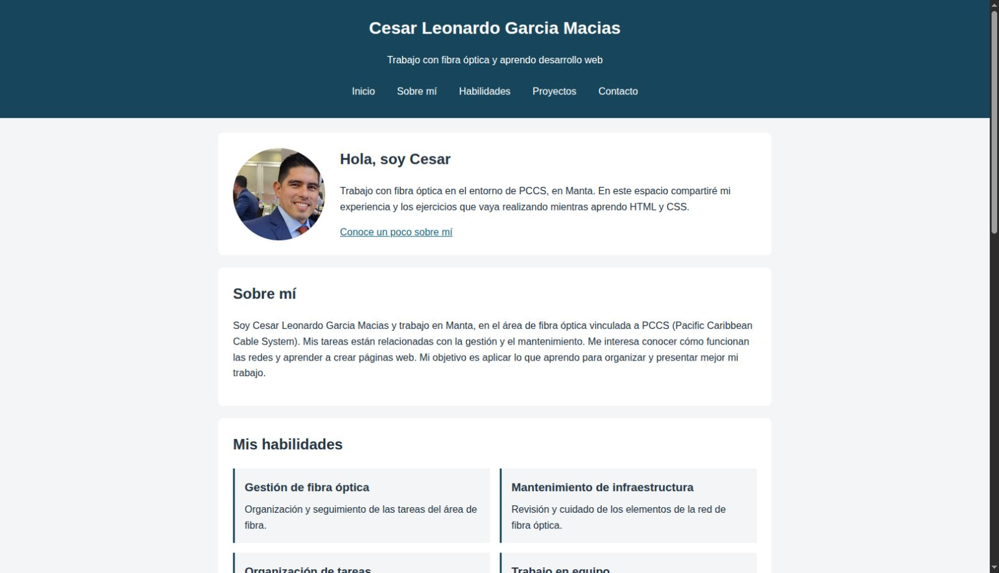
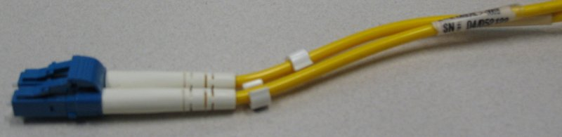

Gestión de fibra óptica
Organización y seguimiento de las tareas del área de fibra.
Trabajo con fibra óptica y aprendo desarrollo web
Trabajo con fibra óptica en el entorno de PCCS, en Manta. En este espacio compartiré mi experiencia y los ejercicios que vaya realizando mientras aprendo HTML y CSS.
Conoce un poco sobre míSoy Cesar Leonardo Garcia Macias y trabajo en Manta, en el área de fibra óptica vinculada a PCCS (Pacific Caribbean Cable System). Mis tareas están relacionadas con la gestión y el mantenimiento. Me interesa conocer cómo funcionan las redes y aprender a crear páginas web. Mi objetivo es aplicar lo que aprendo para organizar y presentar mejor mi trabajo.
Organización y seguimiento de las tareas del área de fibra.
Revisión y cuidado de los elementos de la red de fibra óptica.
Registro de pendientes y planificación de las actividades diarias.
Comunicación con los compañeros para coordinar el trabajo.

Página con mi presentación, habilidades y contacto, hecha con HTML y CSS.
Ver código del portafolio
Mantenimiento preventivo anual de la infraestructura de fibra óptica para conservar su buen estado y contribuir a su correcto funcionamiento.
Puedes completar este formulario de demostración.
Este formulario es visual y no envía mensajes.